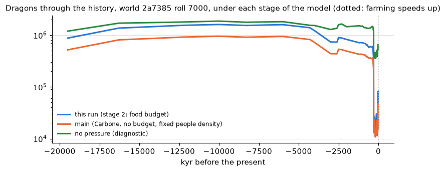

The age of dragons: natural against present numbers
In short (fun lane 45b, 2026-10-29; the 6 worlds x rolls 7000-7003 dnd sweep against main):
- Food now sets the dragons' natural numbers (your PW-990 ruling, option B). Each year the land offers 10% of its wild herds plus 10% of the herders' stock. The peoples' hunters eat first, then the giants. The rest of the predators split what is left by body size: the small and mid-sized hunters take 83%, the dragons 17%. A dragon eats about 2.7 t of prey a year, so that 17% sets how many dragons the land holds.
- Dragons where no people live: about 1 per 160 km² on 1 t/km² of prey. Rich savanna (about 7 t/km²) holds about 1 per 23 km², a poor desert (about 0.6 t/km²) about 1 per 265 km². The old rule from prey numbers (Carbone & Gittleman) gave about 1 per 270 km² on 1 t/km², so food allows about 1.7 times as many. Two checks from the papers: living mammal carnivores of a dragon's mass are predicted at 1 per ~200 km² (Jetz et al. 2004), and large reptiles at 1 per ~27 km² (Farlow 1993).
- Dragons per run at the present: 62,600 against 42,300 on main (+48%; the range is 8,300 to 162,000 by world). Main's 15,300 was world 2a7385 alone; this world now has 20,000 on roll 7000. We did not tune this down.
- Dragons take very little of the food: 0.9% of it 25,000 years ago and 0.6% today. In country with no people they eat about 7-8%. In peopled country the pressure rule leaves 1-2% of the dragons the food could feed, and as little as 0.2% in places. This is true even for foragers, who should not be able to kill dragons. Measured on 6 runs (one per world) with the pressure turned off, which gives 174,000-604,000 dragons per run against 14,000-80,000 with it: foragers' country keeps 0.6-2.1%, herders' 0.7-8.1%, farmers' 0.2-1.4%. Fixing this is stage 3 (persecution set against slow breeding).
- The peoples eat most of the wild game where they live: 88% of the wild surplus in foragers' country and 52-56% in farmers' country before farming. The reason is that dnd's hunting peoples live at farmer-like densities (halflings 12 per km², goblins 5). We have filed this for a decision.
- People density now follows the land's productivity (PW-974). Foragers rise and fall with the wild food (the foraging layer), herders with the grass, and farmers are unchanged. Each way of life's average density stayed the same (foragers 3.65 against 3.66 people/km², herders 0.81 against 0.76). The share of peoples with a big enough range is unchanged (69.0% both), and the remnants are 84 against 83.
Every number on this page comes from planet.lineages and one run, world 2a7385 roll 7000; the sweep's numbers come from docs/review/megafauna/people_density.py. Unverified inputs: the 10% offtakes (PW-991), a person's food and game share, and the size-class rule (inbox draft).
PW-967 review, for the owner. World 2a7385 (L7), dnd peoples, roll 7000, settings at their defaults (owner 10-28, 10-29): natural density from food (PW-990 B: the dragons' part of the land's surplus after the peoples and the rest of the predator guild),
younger age schedule, dragon generation 430 yr, dragons held to their food (PW-977 stages 1-2), 1 dragon per 5,000 km² and 1 giant per 2,000 km² where peoples press them. The other candidates are
worked from the same run's fields. Nothing is picked: the settings are meta.megafauna_natural, meta.dragon_ages, meta.dragon_generation.
1. Before the peoples, and now

| natural density | schedule | per dragon | dragons in their country |
|---|
| prey-based (Carbone & Gittleman 2002) | base | 1 per 255 | 711,096 |
| prey-based (Carbone & Gittleman 2002) | younger | 1 per 129 | 1,401,320 |
| prey-based (Carbone & Gittleman 2002) | harsher | 1 per 70 | 2,574,646 |
| prey-based (Carbone & Gittleman 2002) | gentler | 1 per 633 | 286,315 |
| Damuth, Marshall's dinosaur line | base | 1 per 65 | 1,947,934 |
| Damuth, Marshall's dinosaur line | younger | 1 per 31 | 4,095,622 |
| Damuth, Marshall's dinosaur line | harsher | 1 per 18 | 7,113,691 |
| Damuth, Marshall's dinosaur line | gentler | 1 per 135 | 940,749 |
| Damuth, mammal carnivores | base | 1 per 137 | 927,587 |
| Damuth, mammal carnivores | younger | 1 per 65 | 1,950,296 |
| Damuth, mammal carnivores | harsher | 1 per 38 | 3,387,472 |
| Damuth, mammal carnivores | gentler | 1 per 284 | 447,976 |
| present, peopled country | any | 1 per 5,000 | 19,968 (the run) |
Their country: 127.4 M km², any kind's habitat ≥ 0.5. Prey-based rows use the run's prey cell by cell (median there 2.1 t/km²);
Damuth rows are uniform. Present: 1 per 5,000 is 8-71x below the prey-based values, 18-279x below Damuth's.

2. What they eat from: wild herds and livestock

Wild herbivores from grazing NPP by McNaughton et al. 1989's fit (conversion factors unverified, prey.py);
small folk cut them by up to 60% outside tundra and mountains; livestock by way of life. A model, not a fit: see planet/lineages/prey.py.
3. Age schedules (PW-958)

| schedule | mortality wy/yg/ad/anc | ancients | ecological mass | generation (flat / ~mass), yr | cattle/yr per dragon | adult / ancient cattle/yr |
|---|
| base | 0.2/0.015/0.0025/0.004 | 6.7% | 3.2 t | 433 / 705 | 12.3 | 15 / 56 |
| younger | 0.2/0.03/0.005/0.001 | 2.6% | 1.7 t | 427 / 1152 | 5.4 | 12 / 87 |
| harsher | 0.3/0.03/0.005/0.008 | 0.3% | 0.9 t | 290 / 417 | 2.8 | 12 / 47 |
| gentler | 0.1/0.01/0.001/0.002 | 26.3% | 7.5 t | 692 / 1179 | 28.7 | 18 / 71 |
4. Counts over familiar areas (anc = ancients, ad = adults, yg = young, wy = wyrmlings)
Counts for the dragon country as a whole are the run's; these are per area at the pressed or natural density, before the food cap. Owner's hunch to compare, not a target: California ~2 ancients, ~10 adults, 30+ young.
Present, peopled dragon country (1 per 5,000 km²)| area | km² | base | younger | harsher | gentler |
|---|
| Washington DC | 180 | ~0.04: 0.00 anc, 0.02 ad, 0.01 yg, 0.00 wy | ~0.04: 0.00 anc, 0.01 ad, 0.02 yg, 0.01 wy | ~0.04: 0.00 anc, 0.01 ad, 0.02 yg, 0.01 wy | ~0.04: 0.01 anc, 0.02 ad, 0.01 yg, 0.00 wy |
| a county | 2,000 | ~0.4: 0.03 anc, 0.2 ad, 0.1 yg, 0.04 wy | ~0.4: 0.01 anc, 0.07 ad, 0.2 yg, 0.10 wy | ~0.4: 0.00 anc, 0.06 ad, 0.2 yg, 0.1 wy | ~0.4: 0.1 anc, 0.2 ad, 0.07 yg, 0.01 wy |
| Wales | 21,000 | ~4: 0.3 anc, 2 ad, 1 yg, 0.4 wy | ~4: 0.1 anc, 0.8 ad, 2 yg, 1 wy | ~4: 0.01 anc, 0.7 ad, 2 yg, 2 wy | ~4: 1 anc, 2 ad, 0.7 yg, 0.1 wy |
| California | 424,000 | ~85: 6 anc, 43 ad, 28 yg, 8 wy | ~85: 2 anc, 16 ad, 46 yg, 21 wy | ~85: 0.3 anc, 14 ad, 40 yg, 31 wy | ~85: 22 anc, 46 ad, 15 yg, 2 wy |
| France | 550,000 | ~110: 7 anc, 56 ad, 36 yg, 10 wy | ~110: 3 anc, 20 ad, 60 yg, 27 wy | ~110: 0.3 anc, 18 ad, 51 yg, 41 wy | ~110: 29 anc, 59 ad, 19 yg, 3 wy |
Natural, from the prey (at the dragon country's median, 2.1 t/km²)| area | km² | base | younger | harsher | gentler |
|---|
| Washington DC | 180 | ~0.7: 0.05 anc, 0.4 ad, 0.2 yg, 0.06 wy | ~1: 0.04 anc, 0.3 ad, 0.8 yg, 0.3 wy | ~3: 0.01 anc, 0.4 ad, 1 yg, 0.9 wy | ~0.3: 0.07 anc, 0.2 ad, 0.05 yg, 0.01 wy |
| a county | 2,000 | ~8: 0.5 anc, 4 ad, 3 yg, 0.7 wy | ~15: 0.4 anc, 3 ad, 8 yg, 4 wy | ~28: 0.09 anc, 5 ad, 13 yg, 11 wy | ~3: 0.8 anc, 2 ad, 0.5 yg, 0.08 wy |
| Wales | 21,000 | ~82: 6 anc, 42 ad, 27 yg, 8 wy | ~162: 4 anc, 30 ad, 88 yg, 40 wy | ~298: 0.9 anc, 48 ad, 139 yg, 111 wy | ~33: 9 anc, 18 ad, 6 yg, 0.8 wy |
| California | 424,000 | ~1664: 112 anc, 851 ad, 549 yg, 152 wy | ~3279: 84 anc, 610 ad, 1787 yg, 799 wy | ~6024: 19 anc, 960 ad, 2813 yg, 2233 wy | ~670: 176 anc, 362 ad, 115 yg, 16 wy |
| France | 550,000 | ~2158: 145 anc, 1103 ad, 713 yg, 197 wy | ~4253: 109 anc, 791 ad, 2318 yg, 1036 wy | ~7814: 24 anc, 1245 ad, 3648 yg, 2897 wy | ~869: 229 anc, 470 ad, 149 yg, 21 wy |
Natural, Damuth on Marshall's dinosaur line| area | km² | base | younger | harsher | gentler |
|---|
| Washington DC | 180 | ~3: 0.2 anc, 1 ad, 0.9 yg, 0.3 wy | ~6: 0.1 anc, 1 ad, 3 yg, 1 wy | ~10: 0.03 anc, 2 ad, 5 yg, 4 wy | ~1: 0.3 anc, 0.7 ad, 0.2 yg, 0.03 wy |
| a county | 2,000 | ~31: 2 anc, 16 ad, 10 yg, 3 wy | ~64: 2 anc, 12 ad, 35 yg, 16 wy | ~112: 0.3 anc, 18 ad, 52 yg, 41 wy | ~15: 4 anc, 8 ad, 3 yg, 0.4 wy |
| Wales | 21,000 | ~321: 22 anc, 164 ad, 106 yg, 29 wy | ~675: 17 anc, 126 ad, 368 yg, 164 wy | ~1173: 4 anc, 187 ad, 548 yg, 435 wy | ~155: 41 anc, 84 ad, 27 yg, 4 wy |
| California | 424,000 | ~6485: 435 anc, 3316 ad, 2141 yg, 593 wy | ~13636: 348 anc, 2535 ad, 7431 yg, 3321 wy | ~23684: 73 anc, 3773 ad, 11058 yg, 8780 wy | ~3132: 824 anc, 1693 ad, 537 yg, 77 wy |
| France | 550,000 | ~8413: 564 anc, 4301 ad, 2778 yg, 769 wy | ~17688: 451 anc, 3289 ad, 9639 yg, 4308 wy | ~30722: 94 anc, 4894 ad, 14344 yg, 11389 wy | ~4063: 1069 anc, 2197 ad, 697 yg, 100 wy |
5. Food against the livestock beside them (present, younger schedule)
PW-977 stage 1: the land feeds dragons from the sustainable offtake of the wild herds (10%/yr, a judgement inside Farlow 1993's prey turnover) plus the share of the herders' stock they
tolerate losing (10%/yr, unverified); where the dragons would need more, there are fewer. They take wild prey and stock in proportion to what each supplies.
Worst case in this run: a cell's need is 100.0% of its supply, a pocket's 100.0%, and no pocket with a herd loses more than 0.38% of its stock a year.
The earlier version of this table put an ancient's whole yearly kill against the stock in its range, as if it ate only stock (the "eaten / stock if all from stock" column, kept
for comparison): that is not what a dragon in wild country does, and it is not a limit.
| California-sized square at | dragons there | cattle eaten a year | livestock head there | eaten / stock if all from stock | food use (need / supply) | stock taken |
|---|
| -25.3, 54.7 | 57 ancients, 413 adults, 1209 young, 540 wyrmlings | 11,872 | 0 | - | 90.1% | 0.00% |
| -18.0, 51.2 | 53 ancients, 385 adults, 1129 young, 505 wyrmlings | 11,085 | 0 | - | 68.1% | 0.00% |
| -29.3, 62.0 | 27 ancients, 195 adults, 571 young, 255 wyrmlings | 5,602 | 14,459 | 38.75% | 85.2% | 0.74% |
In aggregate small. Locally an ancient takes ~87 head a year (~43 t live): at 1 t/km² of prey and
10%/yr offtake that is ~434 km² of wild country. Where the herders' stock is the most of what is there, that is where bounties come from (PW-961):
- 2 ancient white dragons in the mountains at 35.8, 66.3: each takes ~87 head a year; the dragons there use 9% of the food the land supplies and take 0.2% of the 49,528 head of the herders' stock
- 5 ancient blue dragons in the desert at 34.7, 158.1: each takes ~87 head a year; the dragons there use 14% of the food the land supplies and take 0.2% of the 170,568 head of the herders' stock
- 5 ancient green dragons in the forest at 56.4, -125.2: each takes ~87 head a year; the dragons there use 10% of the food the land supplies and take 0.2% of the 594,276 head of the herders' stock
- 36 ancient blue dragons in the desert at 33.9, -120.4: each takes ~87 head a year; the dragons there use 20% of the food the land supplies and take 0.1% of the 518,675 head of the herders' stock

6. Per kind (present, younger)
| kind | now | by stage | natural in the same country | in peopled country | of their country reached |
|---|
| blue | 12,661 | 315 ancients, 2255 adults, 7048 young, 3043 wyrmlings | 81,020 | 69% | 100% |
| white | 2,653 | 72 ancients, 481 adults, 1450 young, 650 wyrmlings | 3,278 | 32% | 86% |
| green | 2,391 | 60 ancients, 465 adults, 1294 young, 572 wyrmlings | 47,792 | 99% | 93% |
| brass | 1,106 | 29 ancients, 186 adults, 616 young, 275 wyrmlings | 70,026 | 99% | 97% |
| black | 653 | 18 ancients, 118 adults, 367 young, 150 wyrmlings | 43,967 | 100% | 88% |
| red | 339 | 9 ancients, 66 adults, 176 young, 88 wyrmlings | 4,011 | 83% | 39% |
| bronze | 93 | 1 ancient, 15 adults, 55 young, 22 wyrmlings | 4,804 | 99% | 67% |
| gold | 40 | 1 ancient, 6 adults, 26 young, 7 wyrmlings | 8,769 | 100% | 39% |
| copper | 25 | 3 ancients, 14 young, 8 wyrmlings | 3,221 | 100% | 40% |
| silver | 7 | 2 adults, 3 young, 2 wyrmlings | 95 | 100% | 69% |
Giants (no stages): hill giant 238 now / ~4,063 natural, cloud giant 57 now / ~200 natural, frost giant 63 now / ~88 natural, storm giant 439 now / ~3,806 natural, fire giant 316 now / ~1,819 natural.
7. The food budget, stage 2 (PW-977): the peoples' and the guild's share, then the dragons'
Per cell, in head of cattle-sized prey a year (1 head = 0.5 t): the supply is the wild herds' sustainable offtake (10%/yr, unverified) plus
the herders' tolerable stock loss (10%/yr, unverified). First the hunting peoples take their game (density x need: a person eats 2,200 kcal/day, 50% of a
forager's and 5% of any other way's from wild game, unverified), then the giants (their own densities and food) and the rest of the predator guild
(under the default "food" mode the smaller carnivores take 83% of what the peoples and giants leave and the dragons 17%: the size classes of Carbone, Turvey & Bielby 2011, Table 1, weighted by a metabolic M0.75 that is not from the paper; the dragons' natural density is their part over a dragon's food, PW-990 B),
and the dragons get what is left; where they would need more, there are fewer. The squares are centred on the run's busiest ancient pocket (-27.6, 62.3).

| era | area | km² | supply, head/yr | peoples | giants | guild | left for dragons | dragons there | ...without the cap | need / their share |
|---|
| the present | Wales | 15,565 | 867 | 0.0% | 0.0% | 83.2% | 16.8% | 27.1 | 27.1 | 99% |
| the present | California | 376,690 | 26,754 | 0.1% | 0.0% | 83.1% | 16.8% | 829.9 | 830.3 | 99% |
| 10 kyr ago | Wales | 15,565 | 867 | 0.0% | 0.0% | 83.2% | 16.8% | 14.2 | 14.2 | 52% |
| 10 kyr ago | California | 376,690 | 26,749 | 0.0% | 0.0% | 83.2% | 16.8% | 580.0 | 580.0 | 69% |
| 25 kyr ago | Wales | 15,565 | 867 | 0.0% | 0.0% | 83.2% | 16.8% | 21.5 | 21.5 | 79% |
| 25 kyr ago | California | 376,690 | 26,749 | 0.0% | 0.0% | 83.2% | 16.8% | 752.4 | 752.4 | 90% |
Shares of the supply. "dragons there": expected number at the density the model used; "without the cap": what the pressure alone would leave; "need / their share" above 100% would mean the cap bites.
| era | dragon country that is... | cells | peoples' take / supply | guild's take / supply | dragons' need at the uncapped density / supply | cells where the cap binds | dragons the cap removes |
|---|
| the present | no people | 2,033 | 4.3% | 79.2% | 13.8% | 12.9% | 2.8% |
| the present | foragers' country | 4,584 | 76.9% | 18.9% | 0.7% | 27.4% | 18.9% |
| the present | herders' country | 6,330 | 12.3% | 72.9% | 0.9% | 0.1% | 1.2% |
| the present | farmers' country | 4,596 | 57.0% | 35.3% | 1.4% | 9.6% | 7.9% |
| 10 kyr ago | no people | 4,691 | 2.6% | 80.6% | 14.9% | 20.2% | 1.8% |
| 10 kyr ago | foragers' country | 5,442 | 85.9% | 11.2% | 1.6% | 46.4% | 31.6% |
| 10 kyr ago | herders' country | 2,469 | 25.2% | 62.0% | 0.3% | 1.3% | 1.6% |
| 10 kyr ago | farmers' country | 4,894 | 65.0% | 28.2% | 1.0% | 11.7% | 7.1% |
| 25 kyr ago | no people | 4,407 | 2.4% | 80.7% | 14.9% | 21.1% | 1.9% |
| 25 kyr ago | foragers' country | 6,248 | 84.7% | 12.2% | 1.3% | 42.1% | 29.8% |
| 25 kyr ago | herders' country | 2,451 | 25.0% | 62.2% | 0.4% | 1.3% | 2.0% |
| 25 kyr ago | farmers' country | 4,855 | 63.8% | 29.3% | 0.9% | 11.0% | 6.0% |
Made by docs/review/megafauna/age_of_dragons.py from one run; sources in docs/references/megafauna/README.md (Carbone & Gittleman 2002, Marshall et al. 2021 and
Nagy et al. 1999 on file and checked; the wild offtake and stock shares are judgements, PW-991).